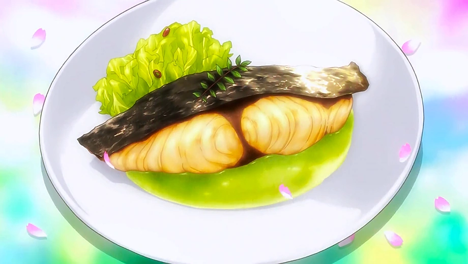

PEPPER-GRILLED SEER FISH WITH SPRING CABBAGE PUREE

Description
Pepper Mackerel with a Purée Garnish is a dish made by Satoshi Isshiki after Sōma Yukihira's welcome party at Polar Star Dormitory. Satoshi cooked this dish to welcome Sōma into Polar Star and challenge him to an unofficial duel. Using a combination of spring cabbage purée and a perfectly prepared seasonal mackerel, he created a harmonious blend of flavors that embodied the feeling of spring.
Ingredients
- 2 Seer fish steaks
- 200g cabbage
- 2 tbsp water
- 1 tbsp butter, 2 tbsp cream, 1/2 teaspoon granulated consomme
- 2 tbsp each mirin, sake, and soy sauce
- 1 tbsp cooking oil
- Japanese pepper, salt, pepper, ki no me
Steps
- Put chopped cabbage and water in a microwave-safe bowl and cover with plastic wrap. Heat approximately 4 minutes in a 600W microwave.
- Put the cabbage, butter, cream, and consomme into a food processor and puree. Season with salt and pepper to taste.
- Fry seer fish steaks in cooking oil, skin side down first. Once both sides are browned, add the mirin, sake, and soy sauce, and simmer on high heat.
- Once liquid is mostly reduced, season with japanese pepper and put on a plate. Clap the ki no me on your palm to bring out its scent, and put it on top of the fish. Garnish with cabbage puree.